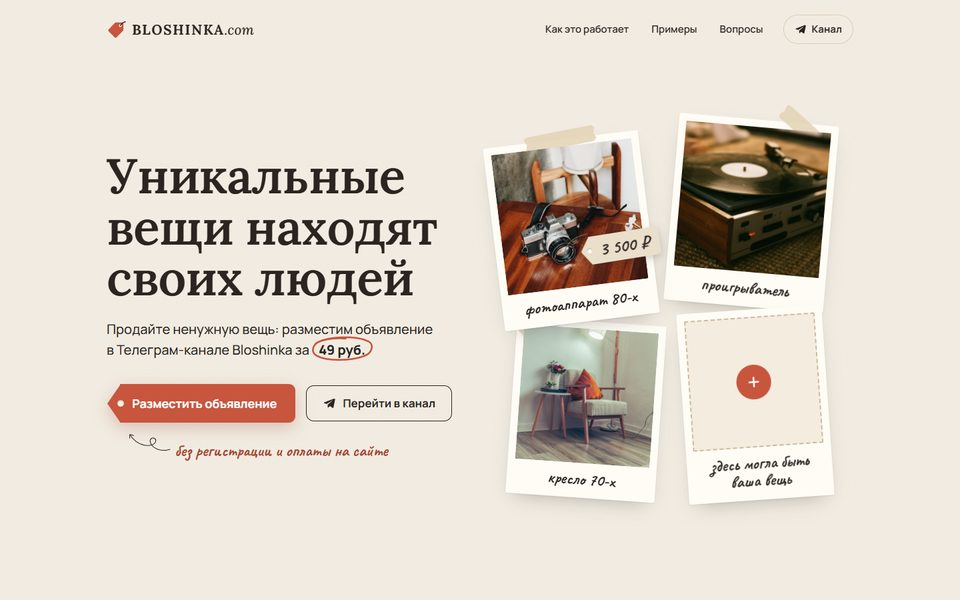
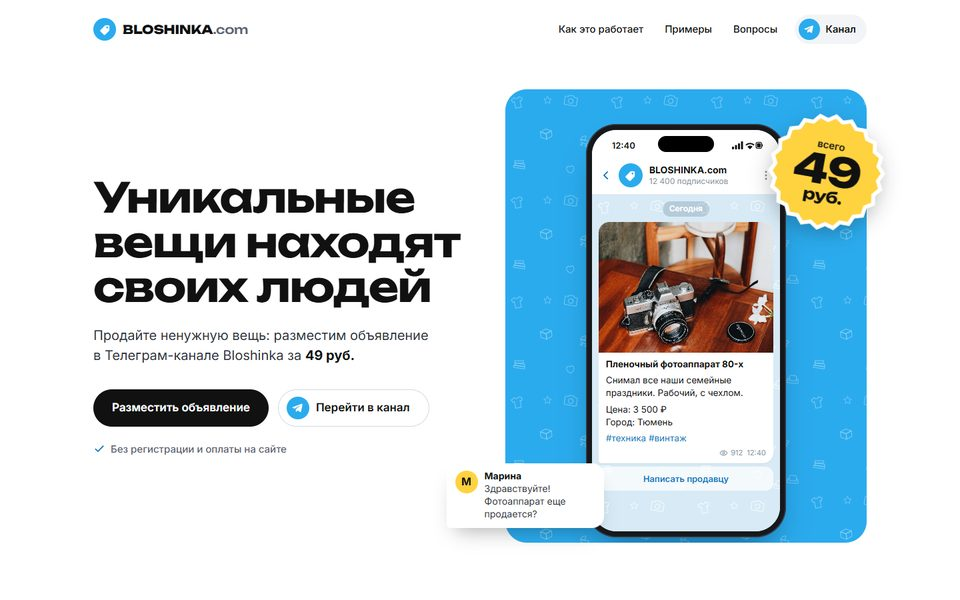

Bloshinka.com: два варианта главной страницы
Это демо для выбора стиля. Тексты, цифры и фото пока примерные, форма заявки ничего не отправляет.

A. «Винтаж»
Теплый, в духе барахолки: полароиды, ценники, пометки от руки. Ближе всего к нынешним текстам сайта.
Открыть вариант A
B. «Телеграм-маркет»
Яркий и современный, похож на сам Телеграм: телефон с постом из канала и стикер «49 руб.».
Открыть вариант BЛучше открыть оба варианта с телефона: так сайт увидит большинство посетителей из Телеграма.